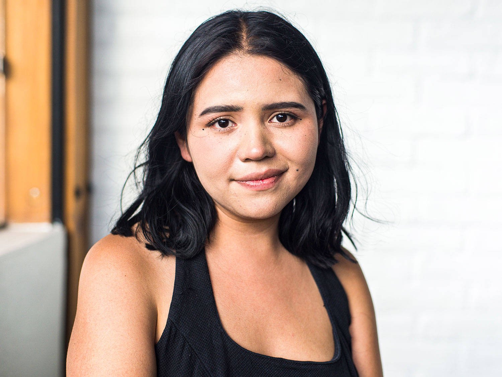

Anita: I don't want to make you relive horrible experiences or talking
about it. So it's up to you what you want to share or not. But if you were
willing to share a little bit the reasons for you leaving for the United
States with me here?
Valeria: I will be happy to do it. It's not an easy subject, but I believe
that if I could share my story, maybe other girls wouldn't feel lonely.
Because I felt lonely once and I know that I'm not on my own. And I feel
safe in this place talking about it.
Anita: Thank you.
Valeria: Of course. Well, I was five when my mom left me and the only
people that took me in was my grandparents. My grandma really likes Mexico
so I spent half of my life, my childhood here. I remember [inaudible] but I
live across from... It's not a security center, but it's jail. So here we
call them reclusorios. And I remember the guy, my mom, my grandma's friend,
I'm sorry I call her mom. My grandma's friend came and he had no money and
actually no extra stuff. So my grandma, in order to help him, told him that
he could rent a room inside my house. So, I instantly hated him. I didn't
like him. But since I didn't have a dad, he began buying me toys and candy.
Valeria: And he kept saying that I was like a child, like his daughter,
because he never had any daughters. So I began opening up to him and
thinking that he was my dad, because I never had a dad. So at the moment, I
didn't know what was going on. And my grandma didn't leave me for quite
long time, but the moment she wasn't there, he would abuse me. And of
course, I didn't know what was going on until one day. Because he was very
erratical. He -- one day he was happy and the other he was just out of his
mind.
Valeria: One day I was playing with my dolls and I remember him calling
people and locking the whole actual home, mobile home doors, windows,
everything. And he kept talking to people. And I heard that, I overheard
actually, that he was going to take care of me, that I was his, and that
they could do whatever they wanted with my grandma. Of course, I was really
little, I was like four or five. And I obviously knew that there was
something wrong. I saw my grandma crying. I saw him hitting her and nothing
was happening to me. I wanted to help my grandma, but he never… he would
push me away and tell me that everything was okay and that I was going to
go to a safe place. Of course I didn't believe him because I saw how he hit
my grandma.
Valeria: So, my house is divided in a funny way. So, we have our own house,
two floor house and on the back we have little apartments where people
could live, right? So, we have a a kitchen window and the kitchen window,
if you would jump, you could go to the apartments. So I had a friend that
lived over there, a little girl. So I remembered and I told him, could I go
drink some water? At first, he was really hesitant. He didn't quite want to
let me go drink some water alone. But I told him that I was fine and I
loved him. I tried to fool him at five years old. So I jumped out of the
window. I called one of my neighbors and he saw me and he had my grandma's
hair. He was pulling her hair and telling me that if I was going to do
something stupid, he will kill her there.
Valeria: So I started crying and my neighbor, he was a guy, he told them
that he didn't have to do that, he was going to give him money. And my
grandma had money because of my grandpa, so they gave him money in order
for him to walk away. He walked away. But the next day he came with his
car, and we have our garage. So he backed up the car and got into the
house. We remember hiding in the apartment upstairs because he was looking
desperately for us. We called the police, he left but my grandma knew that
he came for us, to take us because the first time I believe that money
wasn't enough and maybe he wanted me or both of us. So the next day he
called my grandpa and stated that it wasn't a safe place to be anymore.
Valeria: So about a week later, we gather our things, and since we couldn't
do the paperwork. Because my grandpa always wanted for us to have the
residency is to live in the United States, but we never actually thought
about it, but I don't know, my grandma we really didn't think about it. But
she grabbed her stuff, and then next week we were in the United States
because of that reason. I never told anybody that until I got into to the
States and I took sex ed. I remember when they first started talking about
it because my grandma is very religious. So, no riding bikes or watching TV
or having any mobile phones. So I didn't know really what sex was. So I was
13 when I found out that I was raped when I was little. And I remember
thinking, me thinking about how other girls get raped and thinking that
must be so hard.
Valeria: And when I knew that a person who I thought loved me was raping me
at such a young age, something happened in me and it just clicked. So I
started behaving bad and I didn't know how to respond because I was getting
bullied at my school. So this is a random thing but so my best friend in
middle school was pregnant. They thought it was me or she blamed it on me.
We used to send letters, like those little letters in classroom. So they
caught us one, like many, but one of them, my math teacher read it. And he
sent us to the office. And I didn't want to say that my friend was the one
that was pregnant. So I never said anything. I was like, I'm not going to
say anything. I didn't want to snitch on her per se.
Valeria: She blamed it all on me. My grandpa came, he was furious. And they
did tests and I told them that there was no way of him testing that I was a
virgin because I was raped. He didn't know what to say. Nobody knew what to
say. I never told anybody this. He was the first one that heard it. And he
never said anything.Maybe because he was embarrassed of it.
Anita: This Is your grandpa?
Valeria: Yes. He has never talked to me about this stuff. He's very
closed-minded, I say?
And he never talked about it. So I got suspension. So when I came back, all
kids
thought I went away for like about a week because I aborted. So they
started
rumors and they started throwing food at me, it was horrible. It wasn't
their fault.
Now I know that because it was just rumors, but they used to beat me up in
the
restrooms. They used to throw food at me, sing songs to a point that I
didn't go to
the cafeteria. I used to eat in the restroom.
Valeria: So all of that was going on while me knowing that I was raped and
my mom
never wanting me around and not able to speak to anybody because my
family's
so closed-minded about it. So I decided to tell my grandma... I understand
her
now. But at first, when she told me, I hated her for such a long time. She
told me
that it was my own fault. She told me to not hang out with him and I didn't
obey. I did whatever I wanted. And she told me many times not to do it. So
at that point I thought, but I was a minor. I was five. How could I have
the responsibility toknow who to hang out with and who not to hang out
with? It made me feel so guilty to a point that I thought I was guilty. It
was a horrible experience, I remember it. But then my mom used to visit me
once a year. She has a visa and everything, but she used to visit me once a
year. I never knew why she did it, but she told me that she thought it was
best for me.
Anita: So let me go over a few things. So this might be what you just said,
why did your mom leave you?
Valeria: I just talked to her recently because I never knew why. I don't
hate her, I love my
mom. But she told me that when she got pregnant, she was in college. She's
a
lawyer. So she was in college and then she got married when I was around a
year
old. So this was not my father. So the guy didn't want my mom to move me in
because he left to Baja California. So he didn't want me to go there. So my
mom
knew that my grandma was going to take me. She never knew about the
incident. My grandparents for some reason did not tell my mom. So my mom
thought that I was leaving to get a better school and economical life. She
thought it was the best for me. So that's why she let me be or leave. So
she used to come around, she saw how I was so sad. So here's the thing why
me and my grandma got separated. My mom took me in because she thought that
I was depressed. I tried to kill myself.
Anita: How old were you then?
Valeria: I'm 22.
Anita: No. When your mom took you in?
Valeria: I was around 16. I tried to kill myself the first time when I was
13. And then I
tried to kill myself when I was 14. It was with pills the second time was
in a
moving vehicle. I didn't get any harm done, just bruises and stuff. But I
was on
the freeway and when they realized that I was going to do that, they slowed
down
the car and my grandma grabbed me. So I couldn't get out of the car.
Anita: What do you mean? You tried to throw yourself in front of a moving
vehicle?
Valeria: No, I was inside the moving vehicle and we were in the freeway. So
I wanted to
throw myself out. You could say that my grandma saved my life because she
grabbed me. I hit the floor immediately, but my head never did. So it was
just my
arm and she grabbed me and nothing happened, but they never took me to a
psychologist or anything like that. I don't know why. I hoped, I… now that
I think about it, I wish they would have, but nobody did.
Valeria: Because she was the only person who I think I could open up with,
maybe
because she didn't know me. I could open up to her. I'm in my head she was
my
friend. She was this fun person. And she let me do a lot of things. She was
the
first person who taught me how to ride a bicycle, which I was stressing I
didn't know how to ride a bike. But she was the only person who kind of got
me because I had no friends. So she told me that if it was okay, she could
take me, she had a job now she had money and she could take care of me. So
I said yes, because my grandpa was about to do the paperwork for us to get
our... It was our citizenship now because he's now a US citizen. So she
told me it was about five months that I was going to be with her and then I
was going to move back. But she thought it will help me for me to live with
her a little while.
Valeria: So I said, yes. I came back five months to Mexico, five months
passed, and my
grandma came. I saw her. And then we directly went to the courts. They
never did
the legal paperwork for the adoption. Here in Mexico whenever a parent
decides
to walk away, they just take you in and put in the last names in the birth
certificate
as if they were my biological parents. It's a thing that they do in Mexico.
I was
unaware about it.
Anita: So, they put your grandparents' names as your biological parents?
Valeria: Yes. Because that's something that a lot of people do here
actually, because they
don't go through the legal work. They just... “oh, she's not here, I'll
take care of her.” So, that's what they did. So my grandpa he's old and so
is my grandma. So they didn't know much about it. So they hired a lawyer.
The lawyer said it was okay. So we went to the embassy and my grandma
when... They did an interview and she was asked if I was her biological
kid, she said, yes, because she doesn't speak that much English. So she
said, yes. So immediately it was about a two, maybe four hour process and
it turned into a whole day.
Valeria: Basically they accused my grandma of child trafficking. So we had
to fight it and prove that it was, I don't want to say ignorance, but my
parents were ignorant about the whole process, I mean, they tried their
best and they weren't aware of that they had to do a whole legal paperwork
for the adoption papers. Now then the time passed as she was on probation
for about a year. Then they told her that she could never go to the United
States anymore. My grandpa didn't do anything else. I thought that the same
thing, like the same punishment was for me too. So I never tried, I never
did anything. We waited a long time, so I was 18 and nothing happened. So
now I'm older, I'm an adult now. So I don't think I could follow up with
that.
Valeria: And I've always wanted to finish college, even if it was like
community college, I just always wanted to do something for myself. Because
here is very, very hard. My mom has struggled for many, many years. She's a
lawyer now, but she had to do a lot of things in order to get that way.
Well, to the point that she is now, she works for the government, but she
doesn't get paid very well. And we actually make fun of her because my
grandpa, well, actually my grandpa he's a gardener.
Anita: He's a gardener?
Valeria: Yeah, he is a gardener. He wins the exact same amount in a week
than my mom does in a month. So we make fun of him cutting grass and stuff.
And my mom, she has a master's degree (laughs), and she earns the exact
same thing. So I know it's funny but it's the truth. Here in Mexico, you
could become a lawyer. I don't know, a doctor and you might not earn as
much money. So I've always wanted to have a home. When I came back here,
unfortunately here, it's very, very unsafe. I ride the subway every day.
I've had people jerk off next to me or masturbate next to me.
Valeria: When I got raped again, it was by a taxi driver. I actually got
pregnant. And because I was in such a depressive state, I tried to commit
suicide again. And instead of it killing me with antidepressants, I killed
my baby. So I had a miscarriage. It was horrible. I remember not telling
anybody, not my mom, nobody knew. Just going to the hospital and just
bleeding in the floor and nobody did anything. I went into surgery and then
that was it. I finally told my mom and we went to, well, the police. But
they stated that since I had no plate numbers, nothing, it was like looking
for a ghost. That's exactly what they told me. It's like looking for a
ghost. We're not going to find him. So they did nothing about it. And that
was it.
Anita: Can we go back to the States for a second?
Valeria: Of course.
Anita: School wasn't fun?
Valeria: It was amazing. My teachers were great. I've had plenty of
teachers, actually one that changed my life and way of thinking was Mr.
Martinez. He was a history teacher and he was the one who, whenever I
didn't have a place to eat, like the cafeteria, he will just say that I
could stay in and eat with other teachers. And I actually became real
friends with my teachers. They taught me a lot and he made me love history
and I had many English teachers and I love writing. I used to go to a
magnet school, which is for smart kids kind. So I used to be a great
student actually. So I won an award, the State recognized the award for
writing a short story. But to me, I'm really proud of it. Because me being
an immigrant and coming from Mexico and learning a new language within a
year, because I learned it too quickly because I hated that people made fun
of me because I didn't know how to speak it.
Valeria: So I remember that before I got into school, I used to go to like
books and study and watch TV. I actually learned a lot of my English from
Two and a Half Men, which is a sitcom, it's one of my favorites. So I used
to learn things from that. And at first I taught myself and then I went to
school and obviously that reinforced it a lot much more, but I loved it. I
know I got bullied and I know it wasn't really fun place because of the
bullying. But regarding the teachers, the school, it was amazing.
Anita: What was your short story? Do you remember the short story for which
you won an award? What was it about?
Valeria: Oh, yes. It was about, I've always wanted to be a dancer when I
was little. So it was about a girl. It was about me. About a girl who used
to be a dancer and then her leg got amputated. It's kind of like a
reference of how I was studying ballet here and then I've moved to the
States and I just got so depressive that a part of me wasn't there anymore.
So even though I loved it, I stopped doing it. And I've always wanted to
become a prima ballerina, but I never got the chance to, so that won an
award. Yes, it was kind of like a reference. I didn't want to say it
literally, but it was kind of like a reference of me and that won an award.
Anita: So it was as if part of you got cut off from what stayed in Mexico,
is that what
you're saying?
Valeria: Yeah. Exactly.
Anita: Can you say that as a whole sentence?
Valeria: Like if a part of me was amputated and left in Mexico. Not fully
me was a hundred percent in the States and it's like living a partial life.
50 in the States, 50 here, so you're not an American because you will never
be, you're not a true Mexican because you will never be. So it's kind of
like, what are you? It's weird. But I’ve learned to embrace it.
Anita: You need to write more, you know.
Valeria: Yes. I am actually writing a book right now. It's nothing
professional by any means, but I'm writing a book. And actually, the friend
that came along with me, he's the one who has always encouraged me because
I was so depressed. But he has always helped me. And my mom too. She's
always been there for me. I know that she left me and she wasn't there when
I needed her, but I love my mom. I truly, truly love my mom. She talks to
me like if she was my friend, my mom too. But she has always told me that
it doesn't matter who you are as a person, if you been educated, gone to
college, if you're anything in life, you could always write a book. That
stuck to me my entire life.
Anita: What's your book about?
Valeria: It's actually not about me at all, but it's kind of like a science
fiction, because I'm a little geek.
Anita: You like science fiction?
Valeria: Yes. Quite a lot. It's kind of like Lord of the Rings. It's about
mythology and all that stuff. Kind of like Game of Thrones.
Anita: I'm on season five.
Valeria: Oh, it's a lot, but I'm on season four. But I don't want to finish
it quite because I'm also a fan of Lord of the Rings. So I kind of want to
write a book about that type.
Anita: So you got bullied at school, why?
Valeria: Because people thought I had an abortion because of rumors of my
best friend. I understand why she did it. It wasn't fair, but I never stood
up for myself. And at some point I just let people believe it.
Anita: But didn't they know she was pregnant?
Valeria: No.
Anita: But what happened to her? She had an abortion?
Valeria: Oh, she walked away and then she had her kid later on. But I think
she dropped out of school. So nobody actually knew. So it kept and people
used to call me a slut and offensive words. And they used to throw money at
me. Guys would do horrible things to me. I remember that the chairs were
aligned and a guy used to put his knee on my butt and just kept touching
me. And I couldn't say anything because he used to say that I liked it.
That I was a slut anyway. So I never told anybody that until I got to AC, I
believe is... What was it called? ACP. when they put like-
Anita: AP?
Valeria: Yeah, like bad kids. I don't what is it called it, ACPA? I believe
we call it ACP. It's within the school. It's not like juvie or anything or
boot camp. It's within the school when you have a troubled kids or
teenagers, they put you in a separate room. So you don't get to talk and
you get to go to the cafeteria in a certain time when none of the other
students are there.
Valeria: So I believe it was called ACP or something like that. I don't
quite remember, but I was there because they thought I was a bad kid. And I
was because I didn't want to do my work because I was depressed and they
kept... “Why aren't you doing your work and used to be such a good student,
why you're not doing this?” And I used to reply back because I was so mad,
but not mad at my teachers. I was mad at myself, so I became a bad kid. Not
really, but I became a bad kid. So I had to go to therapy, which was a good
thing twice a week. And I used to study by my own in a quiet classroom. And
we just had assignments. No one-on-one teacher, there was a guard, but it
was through assignments by our own personal teachers. But it was a bad
thing, yes. But it encouraged me not to be bad because a lot of people that
I've seen that migrate to the States, not all of them, because I have a
person in my family who is a Dreamer. He's the first one in his high
school. Not in his class, in the actual high school.
Valeria: I know that not all of them become that way, but some kids,
including everybody, thinks that being bad is cool, for some reason. When
you're in middle school or high school, you think that being bad is cool or
it's like, ah, bad-ass or whatever. But it changed how I thought because of
therapy. That I was just angry. I was never a bad kid. I was an actually
great student and that I was losing all that time in being disrespectful to
my teachers and my grandparents. And I didn't have to, I was just angry at
myself.
Anita: You had a lot of reasons to be angry.
Valeria: Oh yes, of course I had my reasons, but I had to understand that
it wasn't my fault. And I had to understand that, yes, it happened, but it
made me stronger.
Anita: So you didn't want the pregnancy test because you were afraid that
they would find out that you weren't a virgin?
Valeria: No no no. My grandpa wanted to do the pregnancy test. I
remember... Well my mentor from middle school, we kept fighting about it. I
didn't want to do it and they asked me why, if I wasn't hiding anything, I
shouldn’t have been afraid. It was a little bit too much for me. So, I just
yelled it out. And I said, I was raped. You can do the test. It will not
work because I'm no longer a virgin. If you want to do the test to verify
that I'm not pregnant, do it. But my grandpa kept wanting me to do a test
to see if I was sexually active. Just so he could know, because my family's
very closed-minded. So he wanted to do it. And I didn't want to, because I
was afraid and ashamed when he... He was talking like if I wasn't in the
room. And they were deciding for me, so I just exploded. And I just stated
that I was raped and to stop, because if he was going to do it, it was okay
but I wasn't a virgin. Basically, that's why I said it.
Anita: But you weren't pregnant?
Valeria: No, They did the pregnancy test and everything.
Anita: So why did people believe you were pregnant?
Valeria: So this was like my mentor... Well, my school teacher and
everybody that was there from my school, they stated that it was going to
be confidential. So people weren't going to know about this. Nobody was
going to know about this, but my friend before she left, she started
spreading rumors. So people wouldn't think that she was the one pregnant.
And since I got a little bit of time out of school, about a week or so. So
the rumors kind of like matched per se.
Anita: And you couldn't dispel them?
Valeria: I tried to at the beginning, I was like, how could I be pregnant
and come back to school? And nobody cared. So at some point, I remember
going to the restroom and some girls beating me up because their boyfriend
was hitting on me. They stated that I was the one flirting. I was a little
girl not even knowing about sex that much. And people kept telling me that
I was a tease and everything. And I remember them hitting me and me not
doing nothing. I wasn't even-
Anita: This is so strange because we've heard so many stories about young
Mexican immigrants who become pregnant. And here it is your story of a
young Mexican immigrant who didn't become pregnant, but who carried this
kind of burden-
Valeria: In me. And I remember standing up to the cafeteria and being like,
I'm not a slut and I've never gotten pregnant and them just throwing food
at me. So nobody cared, only the teachers did. Not even the principal did
anything. I don't think it got to that degree that she knew, but only my
teachers knew about it. And they try to stop them, and whenever they hear
something mean to me, they were like, hey, stop. But of course they cannot
control everything. So it was mostly between us, the kids. So at some point
when I was getting beaten up, I remember just going like, I'm done fighting
it. If you want to call me a slut, call me a slut.
Anita: So it was that sort of horror treatment and the depression that
brought you back to
Mexico.
Valeria: Yeah. My mom actually saw all of that. When I tried to kill myself
the second time in the car because I did it with pills. Well, fortunately I
just got really sick, but the second time around my grandma witnessed it.
So she immediately called my mom.
Anita: So if you'd stayed in the US, if things have been different, what do
you think you would have done with your life?
Valeria: Honestly, I would have been depressed still. Maybe I would have
gotten pregnant at an early age. Maybe I would have dropped out of school
because of my depression. So actually I thank my mom for bringing me back.
I mean, a lot of things happened here, of course it wasn't fun either.
Because I got raped again. But I learned from it. My mom took me to a life
coach. She's the only one who took me to a psychiatrist, a psychologist.
And they're the ones who diagnosed me with bipolar, I'm sorry, BPD it's
borderline personality disorder. So I understood why I was sometimes
depressed and not even knowing why, because of the traumatic experience.
And I didn't know how to have ongoing life with it. So I started working
and honestly, I'm working, yes, because I'm raising money to study because
the public college that we have here, which is really good UNAM, they don't
have marketing for... They do have it but as a PhD, you don't have a direct
degree on it.
Anita: What is it that you want to do?
Valeria: Marketing.
Anita: Marketing.
Valeria: Yes. I wanted to be a psychologist for the longest time, but I
need to help myself first in order to help others. But I think marketing
has some hints of psychologyas well, but in a fun way. Like colors and how
to portray a certain project for any type of audience or customer. So I
really liked that. And when I was little, I really like commercials and all
that kind of stuff. And I don't know, I always wanted to do something
creative, but also that had psychology in it. So I think that's the best of
both worlds. So I want to study that, but here the one that I want to
study, it's not cheap. It's really expensive and my mom can't afford it. So
she helps me out because when I got raped, I got into deep, deep
depression.
Valeria: I used to go to high school here. And my mentor there told me to
just leave, that I couldn't be in the school anymore because I was
depressed. And I was always sleepy because I used to take two
antidepressants. And one quetiapine, it's to slow down your brain, kind of
like make you sleep a lot. So I was always sleepy. So they just told my mom
that it was best for me to take some time out. I took some time out. I got
more depressed because there was nothing to do. So I got more depressed. So
I didn't finish my high school. So now I'm going to school on the weekends.
And this job is actually, I think it is quite unfair, but it does allow me
or at least it respects my working hours. So I have time to study while I'm
working so I get to pay it.
Anita: As a child though, before you were bullied, before all of this
happened to you, If this whole pregnancy thing, this whole thing wouldn’t
have happened, can you imagine what you might've done with your life in the
US?
Valeria: Oh, yes. I might have become a psychologist. Because when I was
little, I used to be obsessed with it. And I think I might've gone to
college and maybe become a Dreamer. And maybe not now, but in the future
maybe had a family.
Anita: Or you could have one here.
Valeria: Yeah, I could always do that, but I want to be prepared first.
<\p>

Valeria
Mexico City, Mexico
Anita Isaacs
June 6, 2019
More pictures: